{kind=link}
{kind=link}
{kind=link}
{kind=link}
{kind=link}
{kind=link}
{kind=link}
{kind=link}
{kind=link}
{kind=link}
{kind=link}
{kind=link}
Bassin bleu
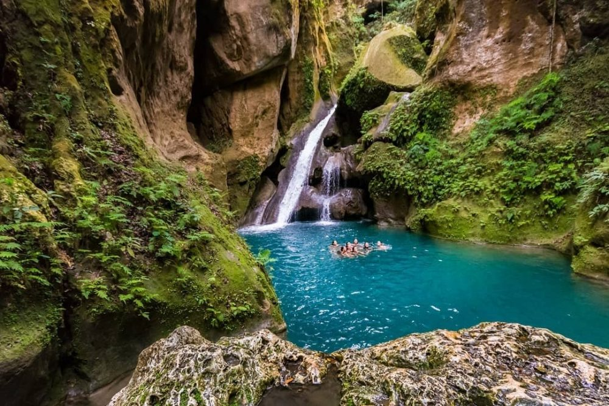Le Bassin Bleu, ou Basenblé en créole haïtien, est un superbe site naturel situé à proximité de la ville de Jacmel, dans les montagnes. Il est composé de trois bassins à l’eau turquoise (le Bassin Yes de 4,6 mètres de profondeur, le Bassin Palmiste de 17,4 mètres de profondeur et le Bassin Clair de 22,8 mètres de profondeur), dans lesquels se déversent des chutes d’eau parfois spectaculaires. Entourés de végétation luxuriante, de grottes et d’arbres fruitiers, ces bassins à l’eau fraîche sont des endroits parfaits où s’offrir une baignade, dans un décor
Cote des arcadins
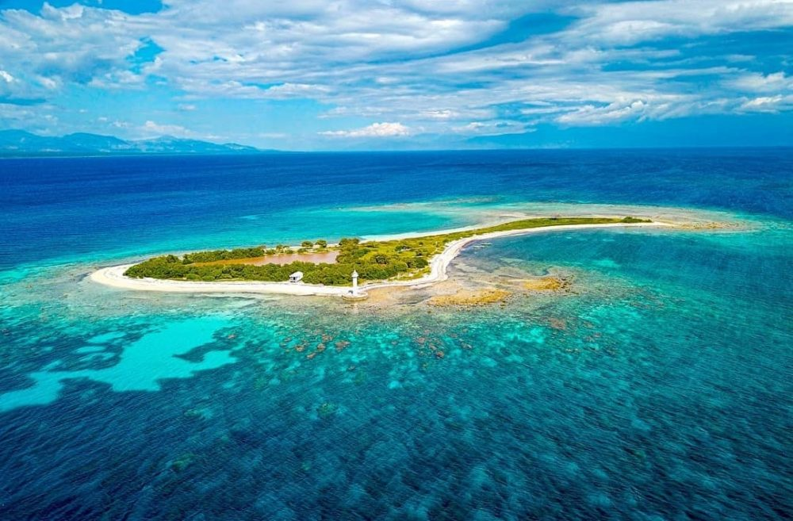Cette côte de 19 kilomètres de long porte le nom des ilets Arcadins situés au large de celle-ci. De nombreux hôtels se sont installés sur la Côte des Arcadins, et cela n’a rien d’étonnant lorsqu’on observe la beauté de ses plages de sable fin et blanc, derrière lesquelles se tiennent majestueusement des montagnes. Préparez votre masque et votre tuba et partez à la recherche de poissons colorés dans une mer cristalline, à moins que vous ne préfériez faire un tour de bateau ? À proximité, on retrouve de nombreuses plantations de bananes et d’autres cultures, ainsi que des villages de pêcheurs
La gonave
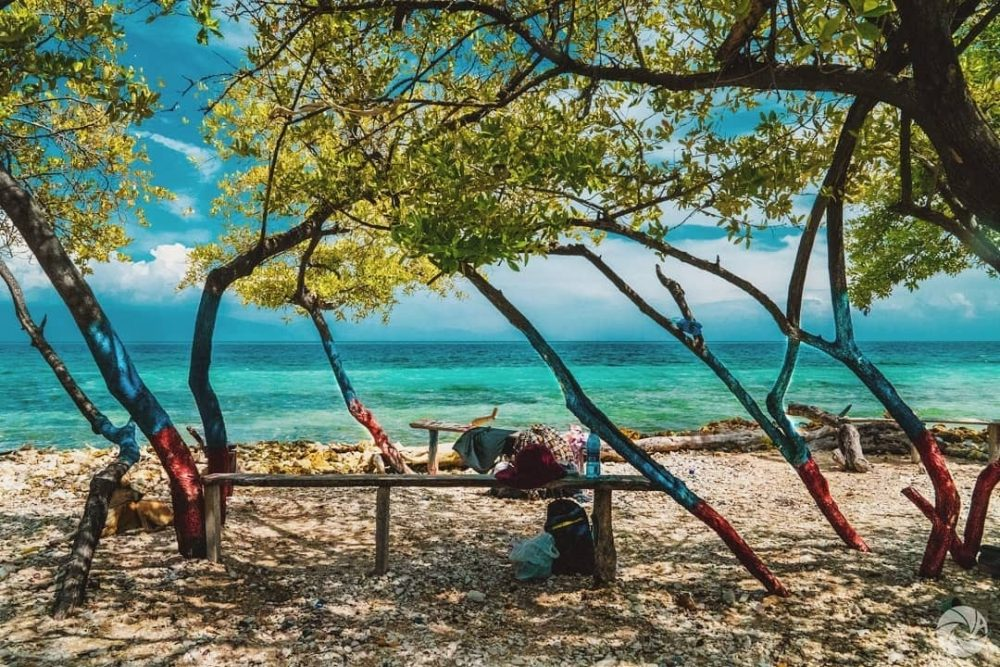La Gonave est une île haïtienne d’environ 690 km2 située dans le golfe du même nom. Les voyageurs qui viennent admirer ses extraordinaires fonds marins et randonner au cœur de ses paysages montagneux et désertiques sont nombreux, bien que l’île soit dépourvue de toute infrastructure touristique. Certaines de ses plages sublimes sont parfois visitées par des colonies de flamants roses et ce spectacle vaut incontestablement le coup d’œil. Autrement dit, visiter l’Île de la Gonave, c’est s’assurer de passer un moment mémorable, presque hors du temps
Grotte-Marie-jeanne
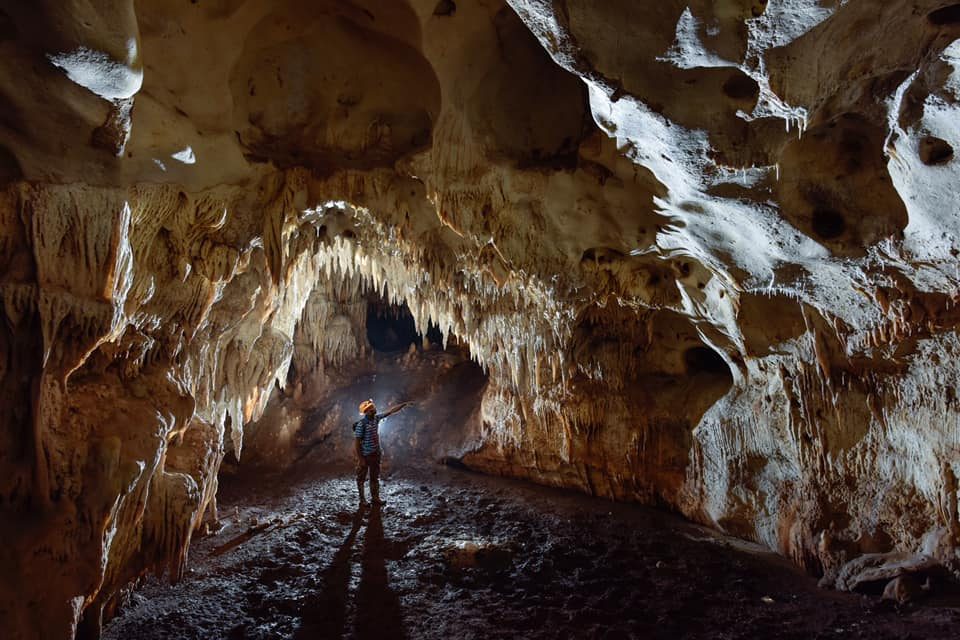Prêts à découvrir la plus longue excavation naturelle de la Caraïbe ? Il s’agit de la Grotte Marie-Jeanne, un véritable labyrinthe souterrain de plusieurs kilomètres qui compterait environ 56 chambres, et dont la formation remonterait à près de 60 millions d’années. L’intérieur de la grotte est recouvert de spéléothèmes, des formations calcaires typiques des grottes tropicales. Ce trésor naturel, situé sur une colline à 120 mètres d’altitude dans la ville de Port-à-Piment, au sud du pays, fait partie des choses à faire à Haïti
Saut-d'eau
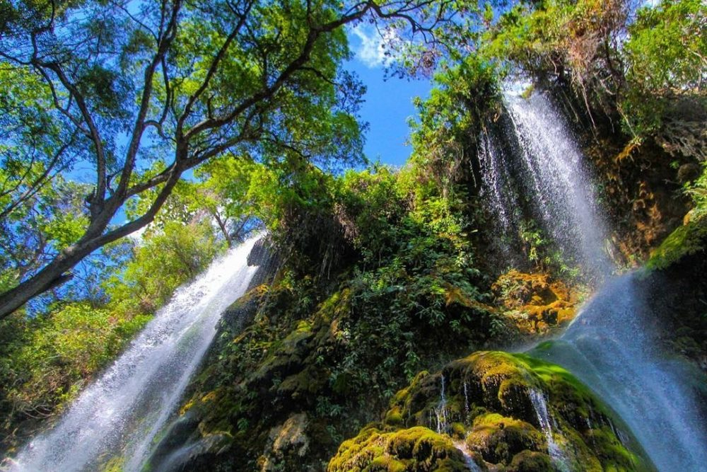Pourquoi faut-il aller voir la Cascade Saut-d’Eau si vous prévoyez de visiter Haïti ? Car les supposées vertus magiques de cette belle et vertigineuse cascade en font un lieu sacré emblématique des pratiques vaudou sur l’île ! Ses eaux proviennent de la Montagne Terrible, également considérée comme un lieu sacré pour les croyants catholiques et vaudou. La cascade Saut d’Eau se situe dans l’arrondissement de Mirebalais, au cœur du pays
Ile-a-vache
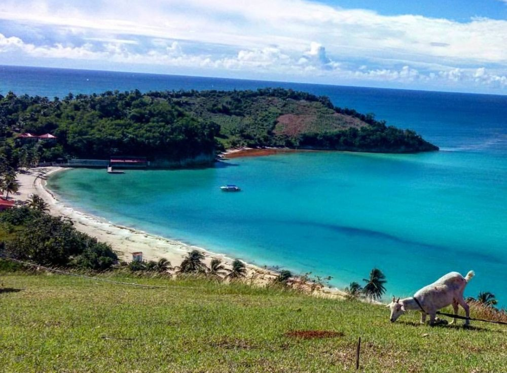Cette petite île de la mer des Caraïbes est une commune d’Haïti qui s’étend sur près de 46 km2. L’île-à-Vache, qui fût un repaire de pirates au XVIIe siècle, dont le Capitaine Morgan, est un véritable petit coin de paradis où la nature s’impose et les voitures n’ont pas leur place. L’île-à-Vache ressemble sur de nombreux points à l’idée que l’on peut se faire d’une île paradisiaque : une eau turquoise et du sable fin avec une végétation luxuriante en toile de fond. Vous prévoyez de visiter Haïti et êtes à la recherche d’une destination paisible où vous relaxer ? Mettez le cap sur l’Île-à-Vache
Ile-de-la-tortue
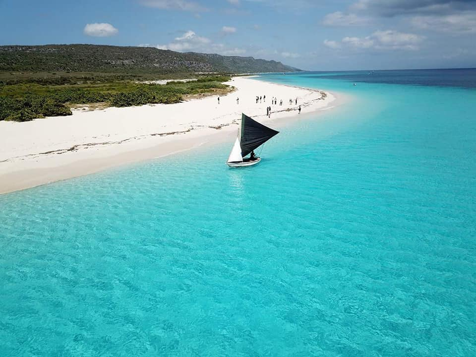Ne passez pas à côté de l’Île de la Tortue si vous vous apprêtez à visiter Haïti ! Cette petite île des Antilles (moins de 180 km2) doit son nom à Christophe Colomb, du fait de sa forme en tortue de mer. Submergée par un ouragan en 2004, l’Île de la Tortue et sa montagne sont finalement réapparues au milieu de l’océan. Le cinéma (Capitaine Blood de Michael Curtis, la série de film Pirates des Caraïbes…) en ont notamment fait une île mythique en l’utilisant comme décor et en la mettant en scène ! Partez découvrir cette île sauvage et mystérieuse, et jugez par vous-même !
Labadee

Labadie, ou Labadee, n’est pas seulement le nom d’une célèbre station balnéaire privée, luxueuse et très fréquentée par les touristes, il s’agit plus globalement d’une baie formée par une péninsule paradisiaque. Située à quelques kilomètres au nord-ouest de Cap-Haïtien, la baie de Labadie et ses eaux turquoises sont surplombées par de belles montagnes. Si vous prévoyez d’explorer ce coin du pays, profitez-en pour vous balader à Cap Haïtien, ou sur le site naturel de l’Île-à-Rat, également appelé Amiga Island ! Cette dernière est un îlot composé d’une petite forêt vierge et de sable blanc entourés d’une eau cristalline depuis lequel les visiteurs sont invités à faire de la plongée, du kayak ou simplement se détendre sur la plage
Pic-national-macaya
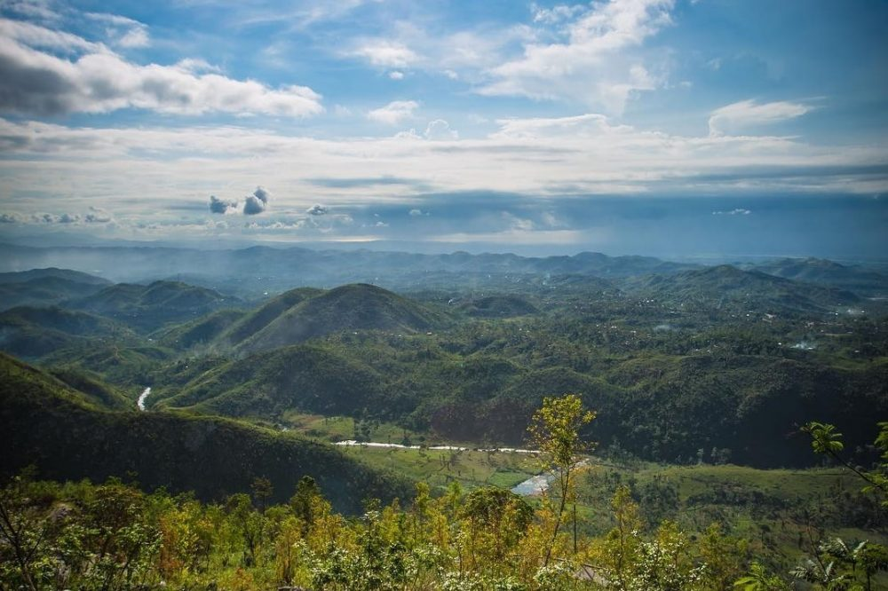Que faire à Haïti pour en prendre plein les yeux ? Explorer l’un des espaces de conservation de la biodiversité les plus importants d’Haïti et des Caraïbes, le Parc National de Macaya ! Ce parc d’une superficie de 20 km2 fait partie du massif de la Hotte et englobe deux sommets haïtien qui sont le pic de Formon (2219 m) et le pic de Macaya (2347 m). Il constitue l’une des dernières forêts primaires du pays, et abrite dans sa forêt tropicale humide des espèces endémiques, ce qui explique l’importance de la protection de ce trésor en péril.
Palais sans souci
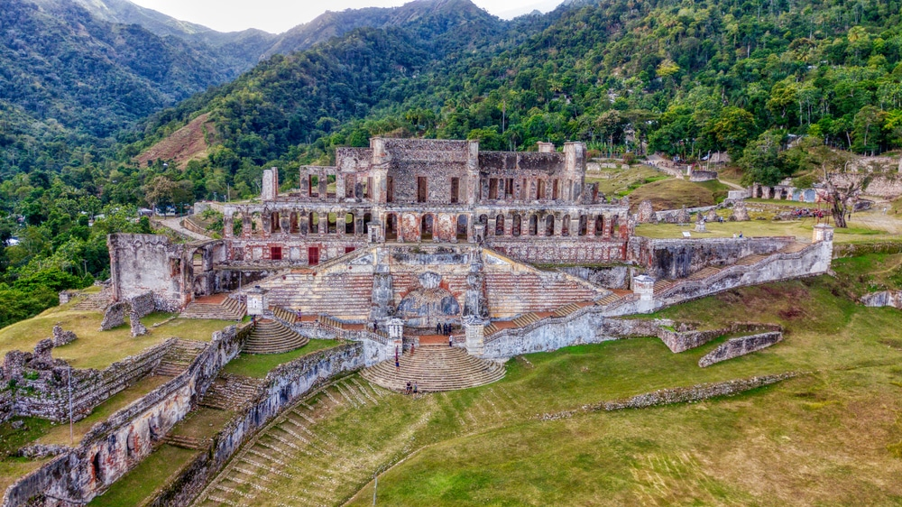Direction maintenant Milot, dans le nord du pays, pour admirer les vestiges du Parc National Historique d’Haïti, reconnu au Patrimoine Mondial de l’Unesco depuis 1982. Il s’agit d’un regroupement de trois sites impressionnants : – La Citadelle La Ferrière, une immense forteresse érigée au début du XIXe siècle qui s’élève à 900 mètres d’altitude, ce qui fait d’elle la plus grande forteresse de la Caraïbe. Au sommet, la vue panoramique sur le nord d’Haïti et la mer des Caraïbes est à couper le souffle ! – Les ruines du Palais Sans Souci, l’ancienne résidence du roi Henri Christophe ravagée par les tremblements de terre ayant surgi en 1842 et 1843. – Le site fortifié des Ramiers, un plateau contenant les ruines d’un fort, recouvert de végétation jusqu’en 1972
Parc national la visite
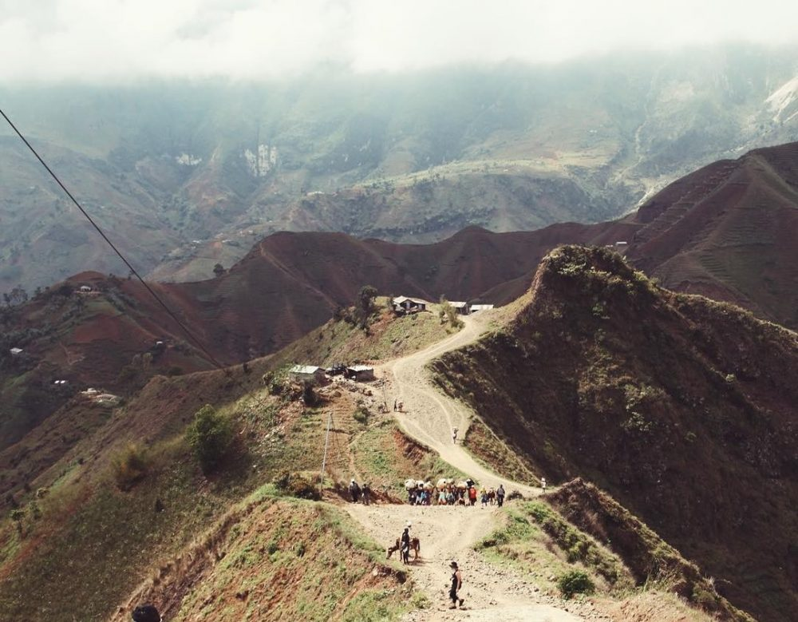Le Parc National de La Visite, d’une superficie de 30 km2, fait partie des choses à faire à Haïti. Créé en 1983 dans le but de lutter contre la déforestation en protégeant la flore, le joli parc vallonné à la végétation luxuriante appartient à la réserve de biosphère de La Selle, inscrite à l’Unesco. Il abrite notamment la plus grande grande réserve de pins du pays et le village de Seguin, perché à 1800 mètres d’altitude. Ici les palmiers ont laissé place aux sapins et aux pins, et le paysage contraste avec tout ce qu’il est possible de voir ailleurs dans le pays
Saut Mathurine
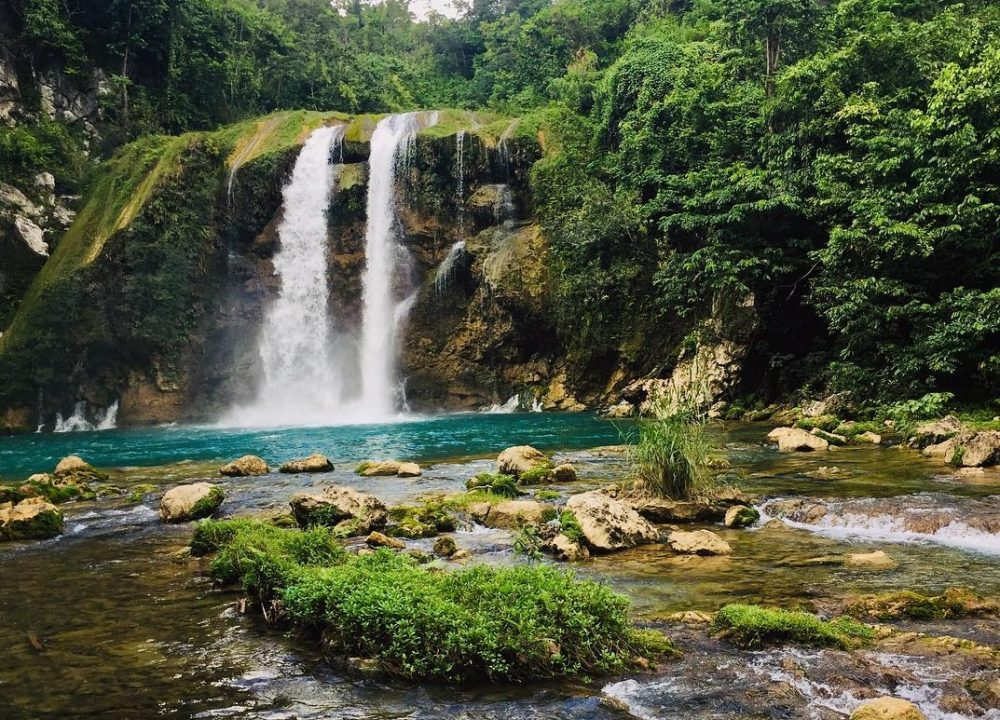Vous vous demandez que faire à Haïti ? Nous vous suggérons d’aller faire un tour à Camp-Perrin, au sud, où vous aurez la chance d’admirer Saut-Mathurine, l’une des plus grandes et belles cascades du pays. Haute de 27 mètres et large d’environ 30 mètres, cette incroyable cascade s’étend sur la rivière de Cavaillon et se jette dans un bassin naturel où il est possible de se baigner. L’idéal après une chaude journée à visiter les alentours ! Pour l’anecdote, ses eaux sont utilisées pour produire de l’électricité et alimenter ainsi les villes de Camp-Perrin et Maniche
Jacmel
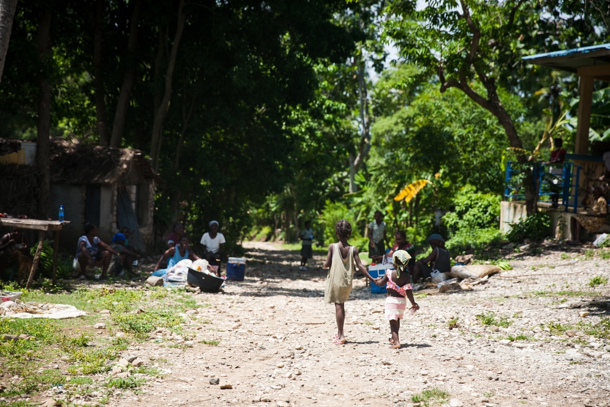Si vous prévoyez de visiter Haïti, Jacmel est un incontournable ! Au bout d’une route sinueuse à travers les montagnes et la forêt tropicale, on retrouve cette ville portuaire colorée reconnue pour sa richesse artistique (ville créative de l’Unesco). Allez-y pour rencontrer les artisans locaux, vous balader sur la promenade aménagée du bord de mer, et prendre du bon temps sur ses plages magnifiques, comme La Saline, Raymond des Bains, Ti Mouillage ou encore la Plage de Congo. Sable noir ou blanc, il y en a pour tous les goûts, et elles ont l’avantage d’être moins fréquentées que celles de Port au Prince